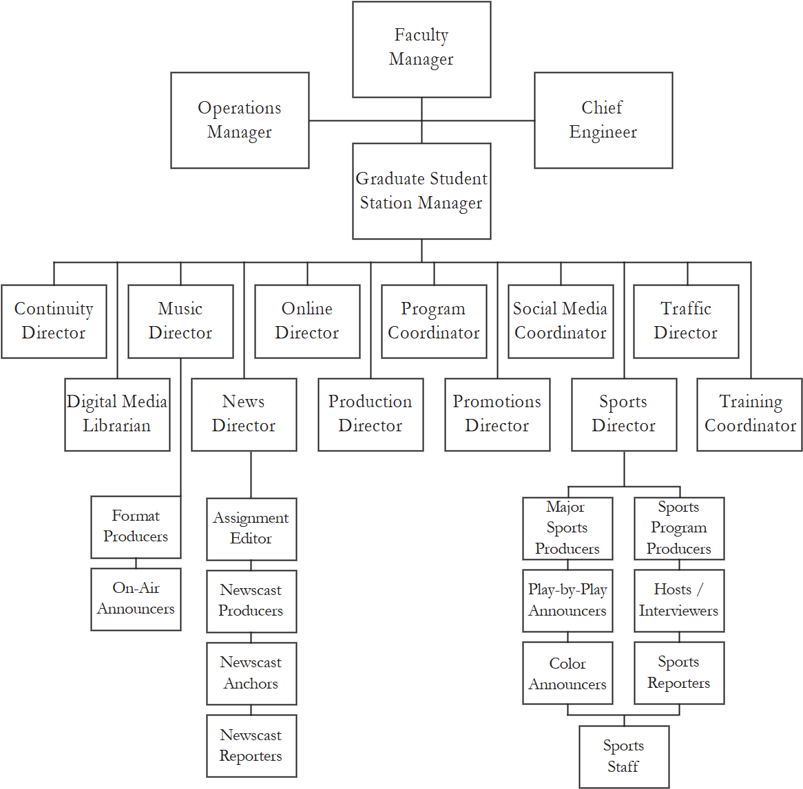

2.D. Station Hierarchy
2.D.1. The Board of Directors
As all businesses, WMUL‑FM is a hierarchical organization. (Please refer to the chart on the next page.) This means that the people at the top of the hierarchy are in charge of and responsible for the people under them. The Faculty Manager heads the hierarchy at WMUL‑FM. At the university level, the Faculty Manager bears the ultimate responsibility for all aspects of the station’s operation.
Please note that the Chief Engineer’s box branches off from the Faculty Manager’s box. The Chief Engineer, by FCC authority, is responsible for what happens on-air at WMUL‑FM. You are required to obey all orders the Chief Engineer gives you about the operation of the station.
While ultimate responsibility for the operation of WMUL‑FM falls on the Faculty Manager, students handle the station’s day-to-day business. Overseeing the various departments at WMUL‑FM is a twelve (12) member student board of directors. The board of directors consists of students who have shown an above-average willingness to work and learn.
Wherever this manual refers to "management", it means The Student Board of Directors, Graduate Student Station Manager, and the Faculty Manager.
2.D.2. Selection of Directors
Each fall and spring, a request for applications for the next semester’s directorships is posted at the station. (Another good reason to read the bulletin boards!) The Faculty Manager and the Graduate Student Station Manager will conduct extensive interviews with all applicants. After all interviews are complete, the Faculty and Student managers will select the next semester’s board of directors.
Appropriate notices soliciting qualified applicants are forwarded to minority organizations on campus and in the community. These notices are in accordance with the Marshall University Affirmative Action Program. WMUL‑FM is an equal opportunity student activity.
If you are interested in taking a leadership role at the station, review the available positions and their prerequisites. If you believe you would be a good fit for one of these positions, submit an application at the appropriate time. Being on the board gives you a few special privileges but obligates you to work hard.
You will learn about radio and about working with people. Many board members are journalism majors because of the prerequisite courses and interest levels. However, non-majors are welcome for some positions. Previous non-majors have served the station well. They have shown uncommon initiative and gained business experience for their non-broadcast careers.
Equivalent experience may be substituted for some of the prerequisites. See the Faculty Manager for more information if you think you have such experience.
2.D.3. Station Hierarchy Chart
Directors are split over two lines for spacing reasons only. All directors are equal.

2.D.4. Directors' Job Descriptions
2.D.4.a. The Student Management
Graduate Student Station Manager
The graduate student station manager is the chief student official of WMUL‑FM. The student manager’s responsibility is to oversee all operations of the radio station, coordinate staff activities, develop program ideas, formulate program policies, schedule meetings with staff, assist in development of formats, and work with department heads in achieving departmental goals.
The graduate student station manager must be a full-time graduate student enrolled in a minimum of nine (9) hours of graduate work, and should have or wish to obtain a background in broadcasting.
Executive Director
When no graduate students are available, the Faculty Manager may select a WMUL‑FM staff member or director to serve as Executive Director. This individual has all the authority of the Graduate Student Station Manager, but is encouraged to delegate responsibilities among the other members of the Board of Directors.
The Graduate Student Station Manager / Executive Director is the only paid student position at WMUL‑FM. All other student positions, including the Board of Directors, are filled by volunteers.
2.D.4.b. The Student Board of Directors
Each major department at WMUL‑FM has a director or coordinator. That individual is chosen to head the department for one semester. The term "coordinator" reflects only a slightly different emphasis in the duties of those positions. The rights and obligations are the same as for directorships. Coordinators are full, voting members of the board. Format producers are NOT members of the board of directors.
The following list is presented in alphabetical order.
Contest Coordinator
The Contest Coordinator is responsible for entering the station’s work in various production contests. The Contest Coordinator will review the available contests and the categories available in each. This director will consult with the other directors and the staff to identify outstanding productions. The Contest Coordinator will consult with the Faculty Manager to determine which of WMUL‑FM’s productions should be entered into each contest and category. The Contest Coordinator is responsible for ensuring that the decided-upon entries are submitted. The Contest Coordinator is also responsible for ensuring that statuettes and certificates for winning entries are ordered and that media releases are written.
This position has nothing to do with any contests that may be conducted by WMUL‑FM with its listeners. Those are the responsibility of the Promotions Director.
This position is typically a concurrent position. Its duties are conducted alongside those of another directorship.
Continuity Director
The continuity director is in charge of all live-copy PSAs and promos that air, including content and scheduling. This director will contact various offices and organizations on campus to assist in promotion of school-related events. PSA information sent to the station by outside organizations will be made suitable for airing by this director. This director will work with the promotions, news, sports and music directors to ensure that WMUL‑FM broadcasts adequate promotions for all programming. The continuity director assists in critiquing the on-air performance of staff announcers. The goal of the critiques is the improvement of all continuity aired on WMUL‑FM. Possessing and using broadcast continuity writing skills is essential for this position.
Prerequisite: Successful completion of AD-PR and Continuity Writing (JMC 380) or equivalent professional experience.
Digital Media Librarian
The Digital Media Librarian will work with the Music Director and Production Director to maintain the computer playback system’s music and imaging library. The Digital Media Librarian regularly updates the music scheduling software’s library to reflect changes in the computer playback system’s library.
This director’s primary responsibility is assisting the Music Director with the ongoing maintenance of the music library: by checking the accuracy and uniformity of artist and title information input by the ingestion clerks, by ingesting new music, and by adjusting the categorization of music in the music scheduling software. The Digital Media Librarian works with the production director to make certain that expired promos, PSAs, and imaging are removed from the computer playback system’s library. The Digital Media Librarian should offer suggestions if the individual believes new categories are needed within the computer playback system or music scheduling system.
Music Director
The music director is the executive producer for all music formats. Responsibilities include supplying each music format producer with ample music selections and maintaining accurate records of all acquisitions for the music library. Records should include both current music and stored music. Soliciting CDs and downloads from national publishers, acquiring trade-off agreements from local distributors, and administering music purchases within the department are also duties of the music director. The music director will work with the format producers to ensure that music obtained by the station is ingested into the computer playback system library in a timely manner.
The music director will meet with music producers bi-monthly to determine and preempt problems. This director will work with management in the preparation of the music budget.
Format Producers
Format producers are in charge of their respective specialty areas/formats. Each producer will work with the music director to fully develop the assigned music format. The music director will supply each format producer with music appropriate to that format. After that, the format producer is responsible for prioritizing the music and overseeing the ingestion of the music selections into the computer playback library by ingestion clerks. The format producer will also assist the Digital Media Librarian in determining which selections need to be moved within or removed from the computer playback library.
Format producers are chosen from candidates who have directly expressed an interest in one of the positions to the music director. The music director selects format producers from these candidates and is their immediate supervisor. Format producers serve at the will and pleasure of the music director.
News Director
The news director is in charge of all news broadcast over WMUL‑FM. This director’s responsibilities include insuring that full length newscasts are aired Monday through Friday. The number and time(s) of each of these newscasts is proposed each semester by the news director and approved by the board of directors. This office will schedule all news personnel into slots compatible with class schedules. This director will develop an orientation program for JMC 340 (Basic Broadcast News) and JMC 231 (Intro to Audio Production) classes. Managing the Associated Press Newsroom System, maintenance of the computer and printer, and the editing of news copy are duties of this office. The news director may appoint an assignment editor with the Faculty Manager’s approval. This director is also responsible for administering the inventory of portable Electronic News Gathering (ENG) equipment and training news personnel in the operation of such equipment.
Prerequisite: successful completion of News Writing I (JMC 201) and Basic Broadcast News (JMC 340) or equivalent broadcast news experience.
Online Director
The online director is responsible for WMUL‑FM’s presence on the Worldwide Web. This director’s responsibilities include but are not limited to: website design and the updates necessary to keep the content current and helpful to visitors to https://www.marshall.edu/wmul . The online director should use creative thinking and problem solving skills to implement innovative strategies to inform visitors to WMUL‑FM’s web pages of all facets of the campus radio station, especially its news, public affairs and sports programming. The online director will collaborate with all departments within WMUL‑FM to stay abreast of programming and events to post to the website.
The online director helps WMUL‑FM webcast music legally by ensuring that the required song metadata is displayed on WMUL‑FM’s website.
Developing a working relationship with the University’s Department of Computing Services and the University’s Internet Designer is crucial to successfully accomplishing the duties this position requires. Lack of communication with the aforementioned entities may cause WMUL‑FM not to be able to stream some programming due to scheduling conflicts with other campus departments or activities.
Prerequisite: successful completion of Media Design (JMC 241) or equivalent academic course work or professional experience.
Production Director
The production director is in charge of scheduling all studios for production. Duties include recording features, station and individual show imaging, PSAs, and promos (both full length and “donut” type). This director has the responsibility of insuring a professional sound on all pre-recorded productions. This person will maintain a production library and will assist with basic/routine maintenance.
Prerequisite: successful completion of Introduction to Audio Production (JMC 231) or equivalent professional experience.
Program Coordinator
The program coordinator is in charge of administering the specialized programming of WMUL‑FM. All pre-recorded programs, both in-house and syndicated, are under the auspices of this director. This officer will maintain the ordering, scheduling, and distribution of programs. The Program Coordinator will be considered the executive producer of local features. This director will assist in developing them to acceptable levels of professionalism. The program coordinator works with the faculty manager and the graduate student station manager in preparing the Quarterly Issues and Programs List for the WMUL‑FM public file.
Promotions Director
The promotions director is in charge of all promotion and public relations for the station. These promotions include newspaper ads, trade-outs, on-campus posters, pamphlets, and media releases. On-air promotional ideas and internal back-patting are other duties assigned to this person. The promotions director also handles the production of "on-air" parties and promotional remote broadcasts. The promotions director is also expected to conduct tours of the station’s facilities for interested groups. Personal experiences or class work in public relations would be a plus for a promotions director.
Social Media Coordinator
The Social Media Coordinator for WMUL‑FM will be responsible for the promotion of the station on various online social media networks. This director will be in charge of the upkeep of WMUL‑FM’s social media pages. Duties include: posting content that promotes sporting events, linking followers to news stories posted online, coordinating interaction between listeners and on-air talent, managing social media contests and campaigns, and more. This coordinator will determine if WMUL‑FM branches out into other forms of social media and how WMUL‑FM will approach them. This coordinator is responsible for communicating with other directors to best represent WMUL‑FM on social media in conjunction with WMUL‑FM’s on-air and website presence. The social media coordinator will also maintain the administration of these accounts including keeping records of userpasses in a secure manner.
Sports Director
The sports director is responsible for all sports announcers, sportscasters, and their programs. This director’s responsibilities include producing a sportscast during each full length newscast, coverage of all Marshall University sports activities, broadcasts of intercollegiate competitions, production of "Sportsview" (WMUL‑FM’s premier sports interview program), and distribution of sports broadcasting equipment to the staff covering intercollegiate competitions.. Editors may be appointed with the faculty manager’s approval. This director is responsible for the care of all equipment specifically assigned to the sports department.
Prerequisite: successful completion of Introduction to Audio Production (JMC 231) and Sportscasting (JMC 321) or equivalent professional experience.
Traffic Director
The traffic director is in charge of assembling the program and operations log packets in advance of each broadcast day. This director is responsible for reviewing the logs for errors after the logs are used and notifying the violators. The traffic director is also responsible for making certain that these corrections are made within the specified time limit of two weeks. The traffic director is responsible for “taking attendance” by comparing the completed logs and the skimmer against the DJ schedule and reporting this information to the board of directors. This director will also assist in the maintenance of the public file. As many FCC regulations intersect with this department, the Traffic Director should be familiar with the pertinent regulations.
Training Coordinator
The training coordinator is responsible for training new staff members and updating the training of the veteran staff members. The primary function of the training coordinator is to ensure that new staff members have been adequately trained in the operation of all control room equipment so that they are able to carry out their assigned board shifts. Once the new staff is trained, the training coordinator should then concentrate on updating the training of the veteran staff members with a goal of maintaining professional skill levels. The training coordinator should conduct training sessions for news, sports, and promotions department staff in the operation of operate remote broadcast equipment and should coordinate with the appropriate directors to schedule those sessions.
Prerequisite: successful completion of Introduction to Audio Production (JMC 231) or equivalent professional experience.
Assistant Directors
Assistant directors may be appointed with the approval of the Faculty Manager. The senior director would delegate specific responsibilities to the assistant director. The assistant director would have decision-making authority over those areas of responsiblity. The assistant director would also be empowered to make decisions for the department when the senior director is unavailable and cannot be contacted. An assistant directorship could be seen as an apprenticeship for the senior directorship.
2.D.4.c. General Requirements for Directorship
-
Attend all staff and directors' meetings.
-
Schedule and post office hours each week.
-
Post telephone numbers where they may be reached.
-
Carry at least twelve semester hours or more of class work.
-
Operate one (1) board shift if needed by the station.
-
Adhere to station policies and set an example of professional behavior.
2.D.5. Guidelines for Selecting Student Media Leaders
2.D.5.a. Advertising and Recruitment
At the end of each Spring and Fall semester, announcements will be made to solicit applications for the following semester’s Board of Directors. Such announcements will be posted in the group chat (Microsoft Teams) and around the station. The announcements will indicate which positions are open, the job descriptions and qualifications, and the deadlines for submitting an application and scheduling an interview. The announcements shall be posted for a minimum of ten (10) working days before the application deadline.
2.D.5.b. Selection of candidates for interview
All full time graduate or undergraduate students who apply for a WMUL‑FM directorship will receive an interview. An interview schedule will be posted on the wall outside the WMUL‑FM staff room and in the group chat (Microsoft Teams). Candidates are required to schedule an interview time for each position for which they apply.
2.D.5.c. Interviewing and Selecting Successful Candidates
The Faculty Manager and Graduate Student Station Manager / Executive Director will interview all applicants. The best qualified candidate for each position will be selected. Factors that determine the best qualified individual for a position will be considered on an individual basis relative to the needs of WMUL‑FM. Job-related factors and characteristics that should be taken into consideration include, but are not limited to:
-
Meeting the requirements of the job description, including leadership qualities
-
Exhibiting personal characteristics such as cooperativeness and open-mindedness
-
Desiring to engage in community service
-
All other qualifications being equal; the extent to which candidates meet the needs of WMUL‑FM or of the University for minorities and/or women.
2.D.5.d. Notification of Selection of Successful Candidates
The Faculty Manager and the Graduate Student Station Manager / Executive Director will determine their selections. The next semester’s Board of Directors will be announced at either the annual station holiday party at the end of the fall semester, or the annual station picnic at the end of the spring semester. In the rare case that a station event is not scheduled, candidates will be notified by email.
2.D.6. Application for Directorship
The Application for Directorship is a form that each potential director needs to complete and submit before receiving an interview.
The form can be found in the PDF version of this manual. Printed copies are available in the WMUL‑FM staff room.
The form is also attached here: Application for Directorship
An online version is available at https://www.marshall.edu/wmul/director-application/ .